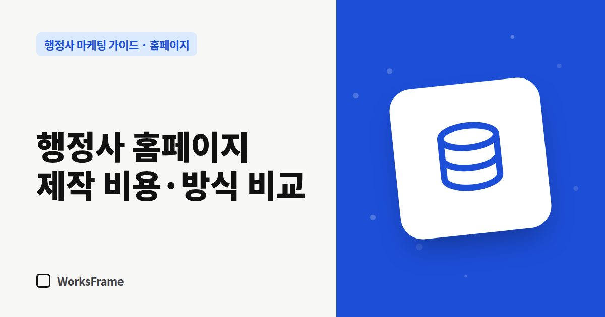

홈페이지
행정사 홈페이지 제작 비용과 방식 비교 — 직접, 빌더, 외주, 구독
한 줄 답
제작비만 보지 말고, 오픈 뒤 수정·관리 비용, 도메인·계정이 누구 명의인지, 해지할 때 조건까지 함께 비교해야 실제 비용이 보입니다.

홈페이지 비용은 “얼마에 만드나”보다 “만든 뒤 누가, 얼마로 관리하나”까지 봐야 제대로 비교됩니다. 네 가지 방식을 같은 기준으로 놓아 봤습니다.
네 가지 방식 비교
| 방식 | 초기 비용 | 매달 비용 | 장점 | 주의할 점 |
|---|---|---|---|---|
| 직접 제작 | 거의 없음 | 호스팅 정도 | 비용 최소 | 시간, 완성도, 방치되기 쉬움 |
| 빌더(아임웹·카페24 등) | 낮음~중간 | 플랫폼 요금 | 직접 수정 쉬움 | 구조 설계는 스스로, 플랫폼 종속 |
| 외주 제작 | 업체마다 크게 다름 | 유지보수 별도 | 완성도 | 오픈 후 수정·관리 조건 확인 |
| 구독형 | 낮거나 없음 | 월 구독료 | 관리까지 포함 | 약정·해지 조건, 명의 확인 |
외주 견적을 비교할 때 물어볼 것
- 포함 페이지 수와 기능 — “업무 안내 페이지”는 몇 개까지인가
- 문구는 누가 쓰나 — 업체가 초안을 쓰는가, 사무소가 다 써서 줘야 하는가
- 오픈 후 수정 — 무료 수정 기간과 이후 비용
- 도메인·호스팅 명의 — 사무소 명의인가 (왜 중요한지)
- 파일 소유 — 계약이 끝나면 사이트 파일을 받을 수 있는가
- 검색 기본 설정 — 제목·설명, 사이트맵, 서치어드바이저·서치 콘솔 등록 포함 여부
유지보수 비용도 함께 보세요
홈페이지는 만든 뒤에도 연락처 변경, 업무 추가, 보안 인증서 갱신 같은 일이 생깁니다. 크몽의 유지보수 시세 안내를 보면 월 정액 유지보수는 가벼운 수정 위주가 월 5만 원대, 일반적인 관리가 월 20만 원대부터 형성되어 있습니다. 제작비만 보고 고르면 1~2년 뒤 총비용이 역전되기도 합니다.
구독형을 고를 때 확인할 것
- 약정 기간과 중도 해지 비용 — 남은 기간만큼 정산하는지, 위약금이 따로 있는지
- 해지 후 사이트 — 파일을 넘겨주는지, 도메인이 누구 명의인지
- 매달 해 주는 일 — 수정 몇 건, 글 몇 편, 리포트 여부가 문서로 적혀 있는지
자주 묻는 질문
가장 싼 방법은 무엇인가요?
직접 만드는 것이지만, 개업 초기에는 시간이 가장 귀합니다. 내가 쓸 시간의 가치까지 넣어 비교해 보세요.
빌더로 만들면 나중에 옮길 수 있나요?
플랫폼마다 다르지만 디자인과 구조를 그대로 옮기기는 어렵습니다. 글과 이미지는 따로 보관해 두세요.